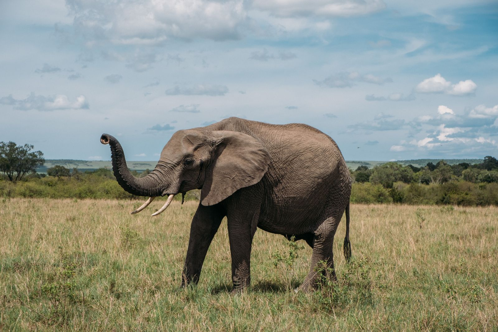
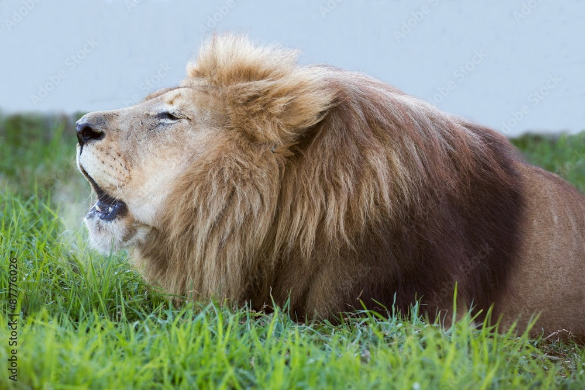
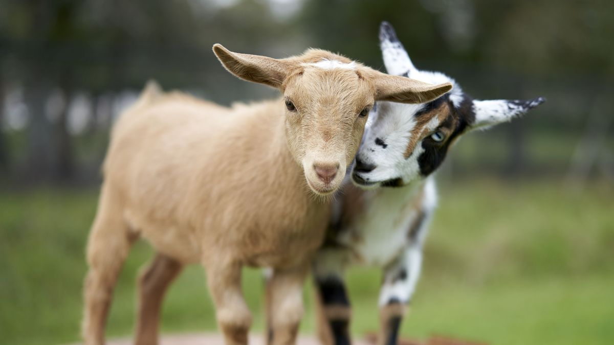
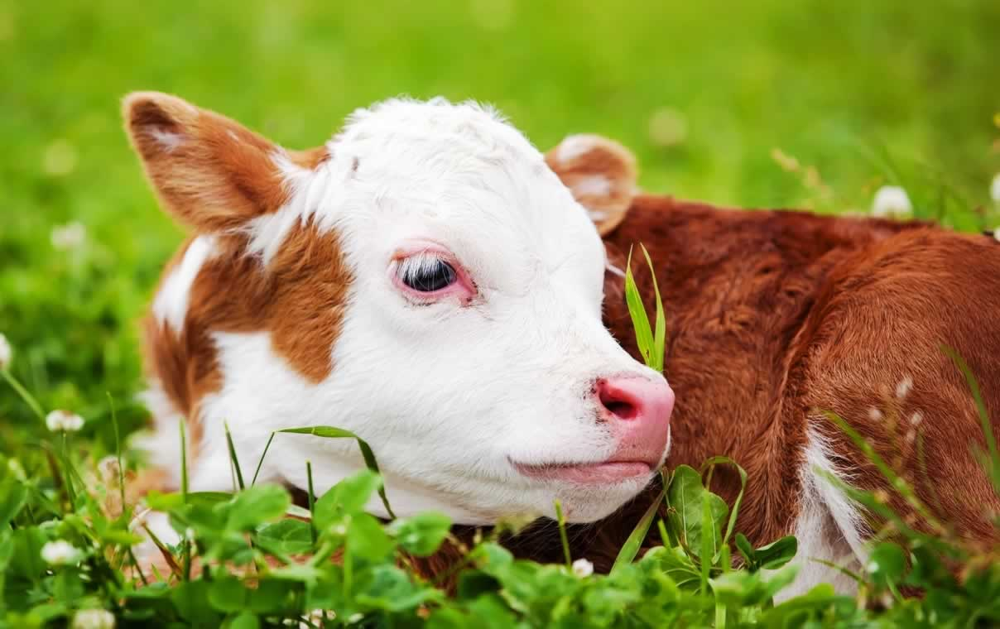

Elephent
Do you know which animal is considered the national animal of Thailand? Well, it is the all-mighty ‘elephant’. Elephants are considered to be the world’s largest terrestrial mammals, commonly found in the deep forests of Asia and Africa. They are therefore classified as Asian elephants (commonly known as the Indian elephant) and African elephants. Asian elephants are comparatively smaller in size than African elephants. Elephants are among the smartest and most social animals on the planet. They never leave their herds, and if one of them goes missing, they make every attempt to locate it. Elephants are herbivorous animals; they eat leaves, twigs, fruits and vegetables.
 If you look into the number of elephants found all around the world, you will see a rapid decrease. While the numbers of African elephants are mostly unaffected, the number of Asian elephants is coming down day by day. In order to protect endangered species, various laws have been passed regarding the possession and rearing of elephants for various purposes. There were places where people domesticated elephants and reared them as pets. This, however, is not accepted anymore. Elephants, from the very beginning, have been helpful in transporting heavy goods and people from one place to another, which is also not encouraged or allowed anymore. It is each and every individual’s responsibility to make sure that these animals get to live their lives in their natural habitats and not how human beings decide.
Tiger
Tiger is a national animal which belongs to the cat family. Scientific name of tiger is Panthera tigris. It is known as the largest animal in the cat family. It is found in various colors such as orange, white and blue having black stripes. Each and every tiger has different black stripes on their body. They may be different outside however their underside of abdomen becomes white. Bengal Tigers were originated in Siberia however they migrated to south because of the colder climate. Now, the natural heritage of the Royal Bengal Tiger is India. Bengal Tigers can be 7 to 10 feet long and 350 to 550 lbs weight.
 They vary in size and weight depending on the subspecies and places they found. Siberian tigers are considered as the largest tigers. Females are considered to be little smaller than the males. Few decades ago, tigers were endangering continuously however because of an Indian campaign “Project Tiger”, the condition of tigers in India is in control. Earlier they were hunted very heavily by the man for the purposes like sports, traditional medical products, etc. ‘Project Tiger’ was initiated by the government of India in April 1973 in order to get control over their number. The main threats to the tiger’s life are deforestation means habitat loss and population fragmentation.
They vary in size and weight depending on the subspecies and places they found. Siberian tigers are considered as the largest tigers. Females are considered to be little smaller than the males. Few decades ago, tigers were endangering continuously however because of an Indian campaign “Project Tiger”, the condition of tigers in India is in control. Earlier they were hunted very heavily by the man for the purposes like sports, traditional medical products, etc. ‘Project Tiger’ was initiated by the government of India in April 1973 in order to get control over their number. The main threats to the tiger’s life are deforestation means habitat loss and population fragmentation.
Lion
A lion is a wild animal with four legs and they look heavy. The male Lion has a mane which makes them look heavier; whereas the female Lion which is known as Lioness has no mane. They mostly live in the jungle and live in groups. Their group is known as ‘Pride’, they have 5 to 30 Lions in a pride. Lioness and cubs also live in these groups naming pride.  They live together and also hunt together. They sleep for 20 hours and do the remaining task in the remaining hours. These Lions are especially found in the Gir Forest India and India is known as home to these animals. They are also found in Eastern African countries, Southern Africa, etc.
Lions eat flesh and sometimes they are also seen eating grass, actually, they are not grass-eaters but they eat when they feel indigestion. Eating grass helps them to vomit and they feel better.
Goat
Goats are one of the most common types of farm animals. They are domesticated widely. They live in a wide range of environments and have always been the most reliable source of income for poor people. Goats are an important source of extra income and work for many farmers and landless workers in rural India. Small ruminant farming ensures that you can work for yourself and provides a buffer in times of trouble like drought and famine.
Goats are ungulates or small animals. The size of adult goats range from 65 to 105 cm (2 to 3.5 feet) at the shoulder and weigh between 18 and 150 kg depending on the species (40 to 330 lbs). Their bodies are coated in dense hair that keeps them warm in the winter.

Both male and female goats have horns, with the male having a larger horn. The horns are curved or spiral in shape and can reach a length of 165 cm (5.4 feet). Male and female goats both use their horns to fight among themselves and to ward off predators (Nowak 1983)
Goats, like other bovids, have a digestive mechanism that allows them to live on abrasive, low-quality plant material like leaves and grasses. Goats may consume a wide range of foods.
Goats are regarded to be smarter than most other hoofed animals, with a natural curiosity. They will occasionally climb up into trees to nibble on the leaves (Nowak 1983; Voelker 1986).
A male goat is known as a buck or billy, and a female is known as a doe or nanny. T
The young ones of goats are called kids.
Cow
Few animals on earth are as important as cows. They have been tamed and used by man for thousands of years. We mainly depend on them for our food. In some countries, people use cow’s meat as a significant source of food. Cows are female cattle, and their male counterparts are known as a bull. They are domestic, bovine animals that feed on plants. The average size and color of a cow depending on its type of breed. There are many breeds of cows. Some of which are more popular like Jersey. The milk-producing capacity of cows is also dependent on its type of breed. Larger cows produce more milk, but it is not always true. Cows have excellent grazing capabilities. Due to this, certain protected grasslands have been declared as anti-grazing zones. Adult cows have a set of 32 teeth. There are no upper-level incisors’ or canines in a mature cow. Their teeth have smooth surfaces with moon-shaped ridges that have been specially designed for an herbivorous lifestyle. Cows chew their food all the time. They can even take it out from their gut to chew it again properly.
Go To Home
If you are interested to know about Plants
Click Here